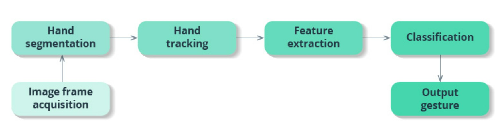

Hand tracking and gesture recognition with AI: How does it work?
Gesture recognition provides real-time data to a computer to make it fulfill the user’s commands. Motion sensors in a device can track and interpret gestures, using them as the primary source of data input. A majority of gesture recognition solutions feature a combination of 3D depth-sensing cameras and infrared cameras together with machine learning systems. Machine learning algorithms are trained based on labeled depth images of hands, allowing them to recognize hand and finger positions.
Gesture recognition consists of three basic levels:
Detection:
With the help of a camera, a device detects hand or body movements, and a machine learning algorithm segments the image to find hand edges and positions.
Tracking:
A device monitors movements frame by frame to capture every movement and provide accurate input for data analysis.
Recognition:
The system tries to find patterns based on the gathered data. When the system finds a match and interprets a gesture, it performs the action associated with this gesture Feature.
HGR system

Many solutions use vision-based systems for hand tracking, but such an approach has a lot of limitations. Users have to move their hands within a restricted area, and these systems struggle when hands overlap or aren’t fully visible. With sensor-based motion tracking, however, gesture recognition systems are capable of recognizing both static and dynamic gestures in real time.
In sensor-based systems, depth sensors are used to align computer-generated images with real ones. Leap motion sensors are also used in hand tracking to detect the number and three-dimensional position of fingers, locate the center of the palm, and determine hand orientation. Processed data provides insights on fingertip angles, distance from the palm center, fingertip elevation, coordinates in 3D space, and more. The hand gesture recognition system using image processing looks for patterns using algorithms trained on data from depth and leap motion sensors:
1.The system distinguishes a hand from the background using color and depth data. The hand sample is further divided into the arm, wrist, palm, and fingers. The system ignores the arm and wrist since they don’t provide gesture information.
2.Next, the system obtains information about the distance from the fingertips to the center of the palm, the elevation of the fingertips, the shape of the palm, the position of the fingers, and so on.
3.Lastly, the system collects all extracted features into a feature vector that represents a gesture. A hand gesture recognition solution, using AI, matches the feature vector with various gestures in the database and recognizes the user’s gesture.
Things to consider while developing gesture recognition technology
Real-time hand gesture perception, while being natural for people, is quite a challenge for computer vision. Hands often get in the way of each other as seen by a camera (think of a fist or handshake) and lack high-contrast patterns.
To develop an HGR system, AI algorithms are trained to recognize labeled data and predict unknown data based on the developed model. A hand tracking database is the first step in AI training. To create a training data set, depth cameras are used to segment a specific element from the background. High-quality segmentation helps AI distinguish between left and right hands, individual fingers, etc. The higher the quality of data sets and the more annotations they include, the higher the accuracy of dynamic hand gesture recognition with computer vision.
At CVPR, Google announced a new approach to hand perception implemented in MediaPipe — a cross-platform framework for building multimodal machine learning pipelines. With this new method, real-time performance can be achieved even on mobile devices, scaling to multiple hands.
The machine learning pipeline of this hand tracking solution consists of several models:
Applications of hand gesture recognition technology
In recent years, HGR technology has started to penetrate various industries as advances in computer vision, sensors, machine learning, and deep learning have made it more available and accurate. The top four fields actively adopting hand tracking and gesture recognition are automotive, healthcare, virtual reality, and consumer electronics.
In recent years, HGR technology has started to penetrate various industries as advances in computer vision, sensors, machine learning, and deep learning have made it more available and accurate. The top four fields actively adopting hand tracking and gesture recognition are automotive, healthcare, virtual reality, and consumer electronics.
Automotive
A gesture recognition solution from Sony DepthSensing Solutions has a time-of-flight feature that measures the time it takes for a gesture to “travel” from the infrared sensor to the object and back. The AI is trained to distinguish main gestures from gestural noise and to operate under any lighting conditions.The BMW 7 Series has a built-in HGR system that recognizes five gestures and can control music and incoming calls, among other things. Less interaction with the touchscreen makes the driving experience safer and more convenient.
Healthcare
Emergency rooms and operating rooms may be chaotic, with lots of noise from personnel and machines. In such environments, voice commands are less effective than gestures. Touchscreens are not an option either, since there’s a strict boundary between what is and is not sterile. But accessing information and imaging during surgery or another manipulation is possible with HGR tech, as proven by Microsoft. GestSure provides doctors with the ability to check MRI, CT, and other imagery with simple gestures without scrubbing out.
Virtual reality
In 2016, Leap Motion (acquired by Ultrahaptics in 2019) presented updated HGR software that allows users, in addition to controlling a PC, to track gestures in virtual reality. The Leap Motion controller is a USB device that observes the area of about one meter with the help of two IR cameras and three infrared LEDs. This controller is used for applications in the medical, automotive, and other fields.
A hand tracking application from ManoMotion recognizes gestures in three dimensions using a smartphone camera (on both Android and iOS) and can be applied in AR and VR environments. The use cases for this technology include gaming, IoT devices, consumer electronics, and robots.